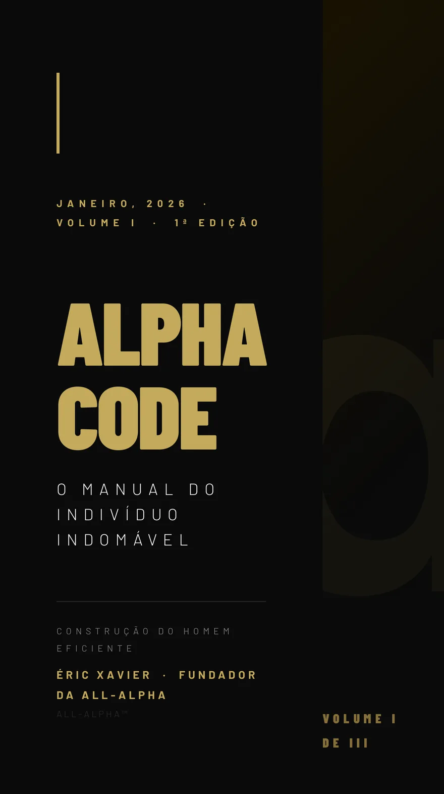
Disciplina · Identidade · Manual
ALPHA CODE — Vol. I
O Manual do Indivíduo Indomável
«Ser Alpha é governar a si mesmo. É levantar-se quando ninguém aplaude.»
Leitura gratuitaMaputo · Literatura aberta · 2026
Histórias de aproximação, memória, paternidade e legado. Livros completos para ler online ou guardar — gratuitamente, sem abdicar dos direitos do autor.
Cada obra tem uma página própria, leitura online e ligação directa para descarregar o PDF.

O Manual do Indivíduo Indomável
«Ser Alpha é governar a si mesmo. É levantar-se quando ninguém aplaude.»
Leitura gratuitaO Strategos · Dossiê de Construção
«Juro que não vou usar o meu passado como desculpa nem por mais um dia. Ele moldou-me. Não me governa.»
Leitura gratuita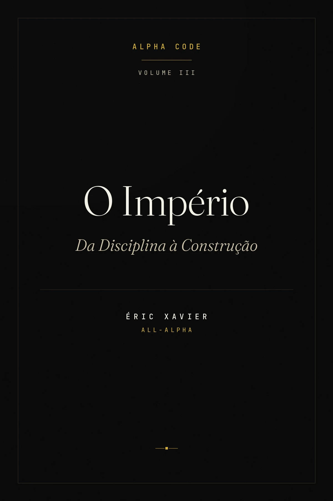
O Império · A Morte do Génio
«Este livro não foi escrito para todos. Foi escrito para o homem que acordou cansado.»
Leitura gratuita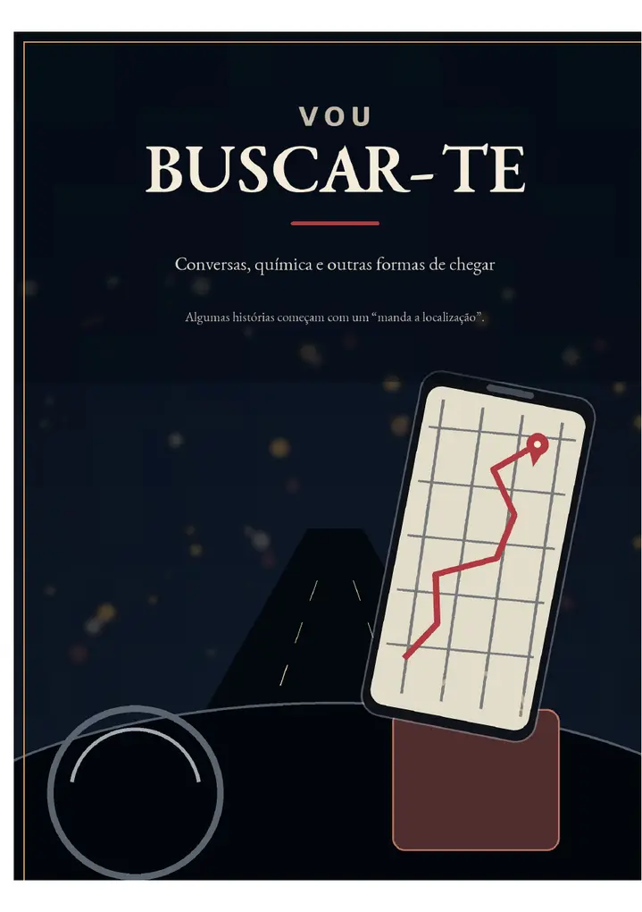
Conversas, química e outras formas de chegar
«Uma localização nunca é só geografia.»
Leitura gratuita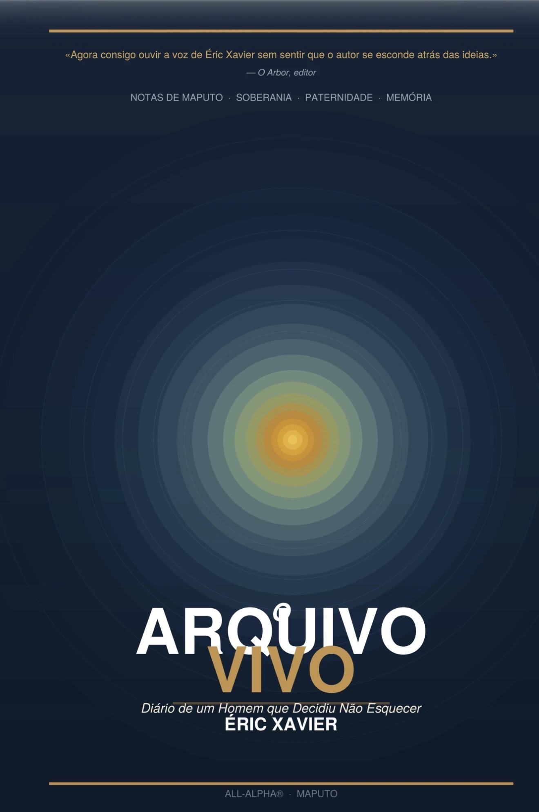
Diário de um Homem que Decidiu Não Esquecer
«Em países onde as histórias dos pequenos nunca chegam a lado nenhum, gravar é uma forma de existir.»
Leitura gratuita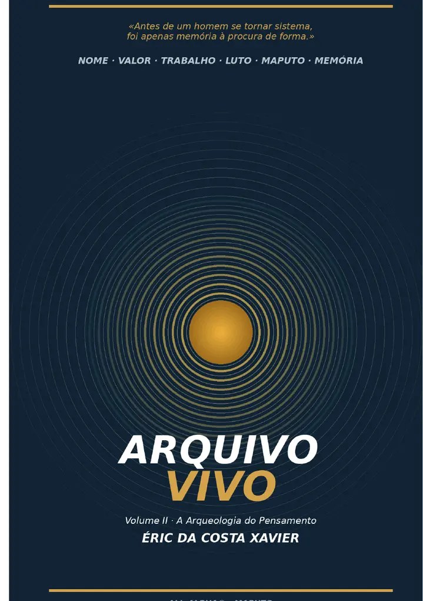
A Arqueologia do Pensamento
«Um arquivo não existe para provar quem tem razão. Existe para impedir que o esquecimento tenha a última palavra.»
Leitura gratuita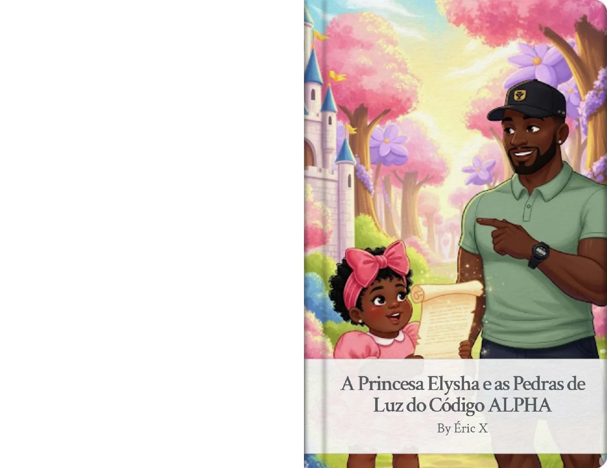
E as Pedras de Luz do Código ALPHA
Uma aventura ilustrada sobre coragem, bondade, presença e construção — valores guardados como primeira semente pública do legado familiar.
Livro aberto · Leitura gratuita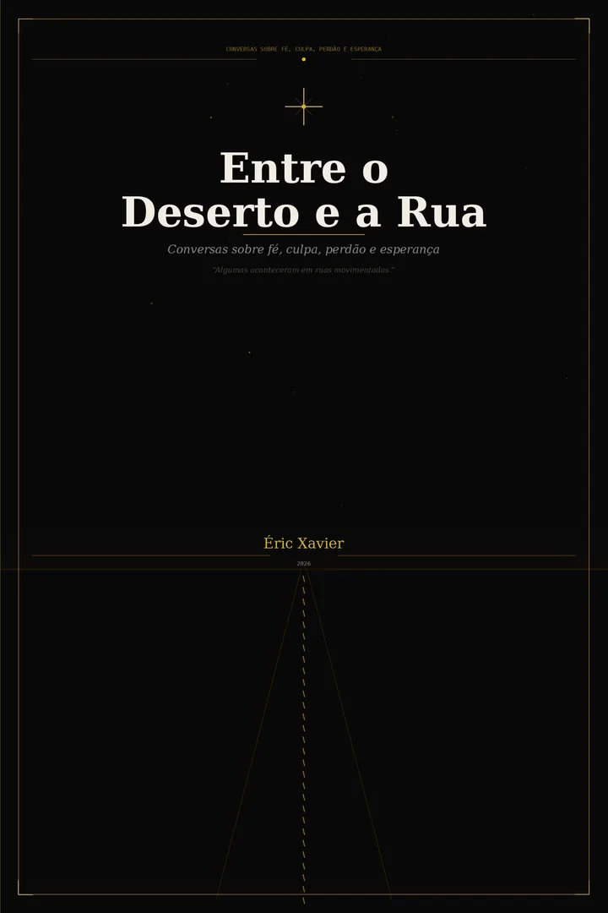
Conversas sobre fé, culpa, perdão e esperança
«A Bíblia nem sempre oferece respostas rápidas. Por vezes oferece espelhos.»
Leitura gratuita
Quarenta e quatro poemas em três partes
«O' mar salgado, quanto do teu sal
São lagrimas de Portugal!»
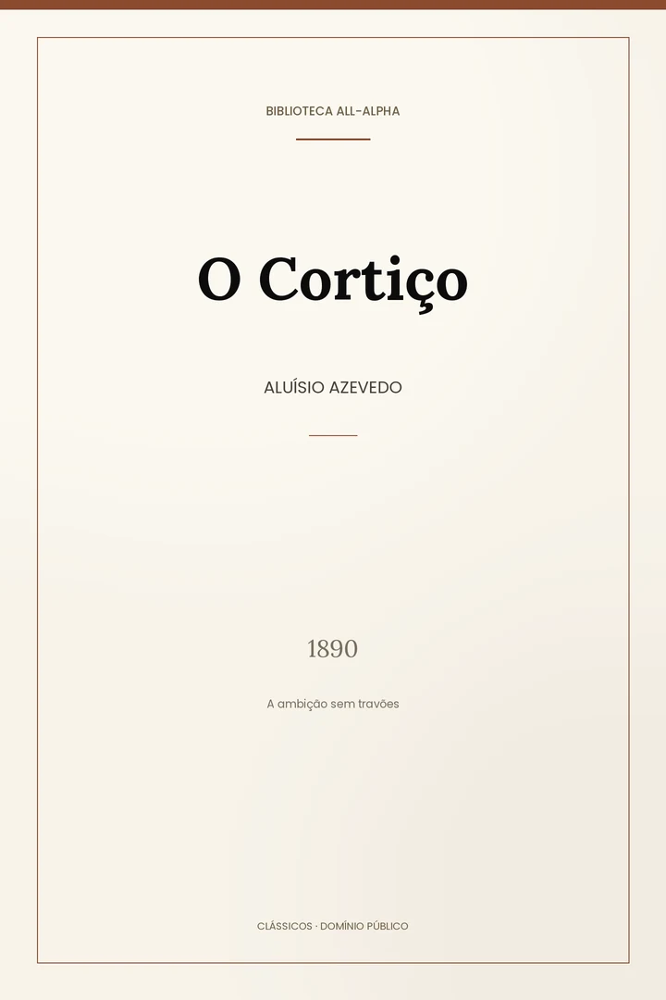
A ambição sem travões
«Possuindo-se de tal delirio de enriquecer, que affrontava resignado as mais duras privações.»
Domínio público · Leitura gratuita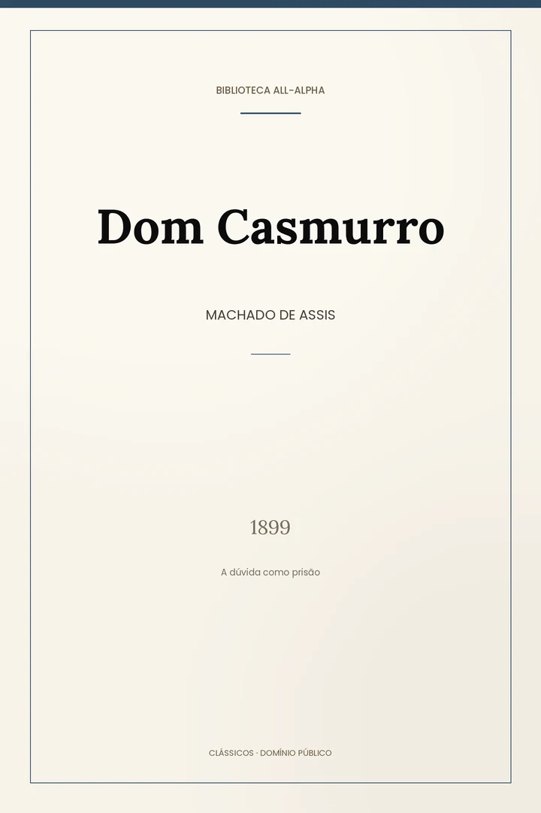
A dúvida como prisão
«uma estava dentro da outra, como a fruta dentro da casca.»
Domínio público · Leitura gratuita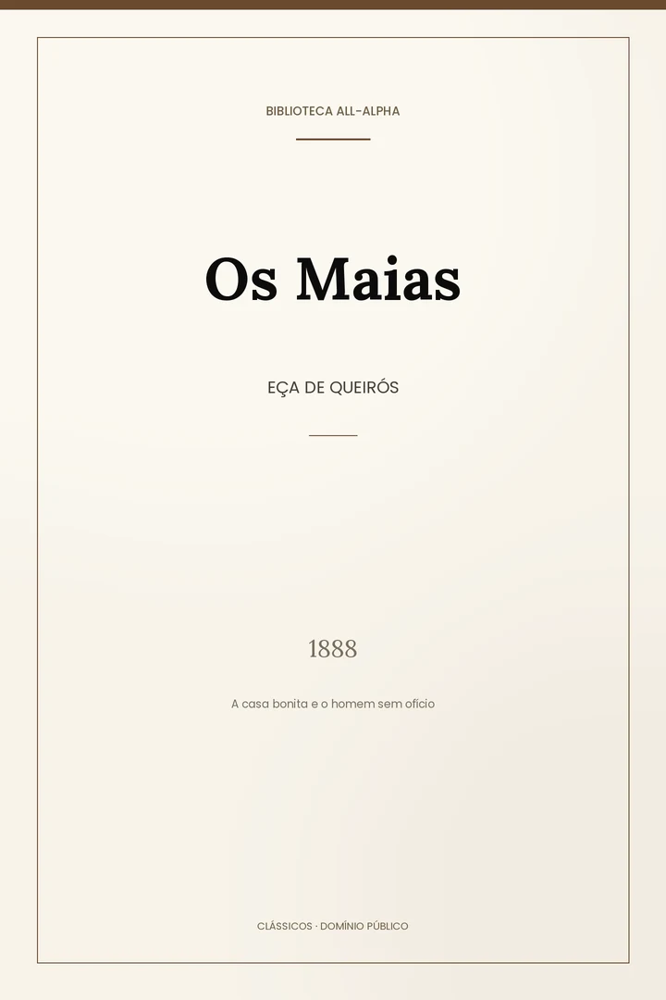
A casa bonita e o homem sem ofício
«O seu unico sentimento vivo, intenso, até ahi, fôra a paixão pela mãe.»
Domínio público · Leitura gratuita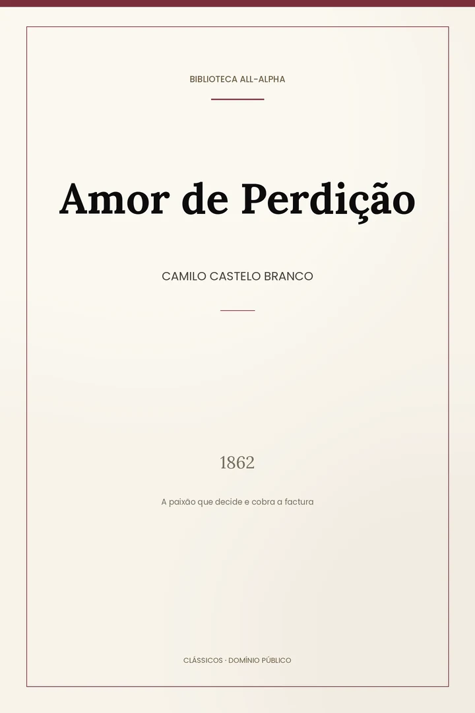
A paixão que decide e cobra a factura
«Dez annos de enamorado mal succedido consumira em Lisboa o bacharel provinciano.»
Domínio público · Leitura gratuitaPodes ler e guardar uma cópia pessoal sem pagar. É esse o compromisso desta biblioteca: tornar a obra acessível sem criar uma barreira financeira.
© 2026 Éric Xavier. Todos os direitos reservados. A disponibilização gratuita não transfere direitos de reprodução, alteração, distribuição, adaptação ou comercialização. Qualquer utilização além da leitura pessoal exige autorização prévia e escrita do autor.